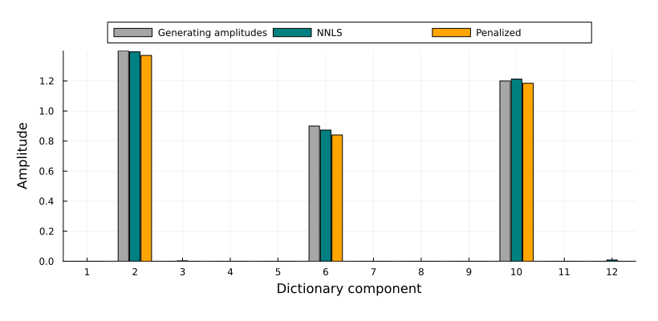

Nonnegative least squares
A sensor records a mixture of signals from known components. Each column of X describes one component, and each coefficient is its amplitude. When the signals add and their amounts must be nonnegative, we fit
\[\widehat\beta_\lambda = \arg\min_{\beta\geq 0} \left\{\frac{1}{2n}\|X\beta-y\|_2^2 + \lambda\sum_{j=1}^p\beta_j\right\}.\]
With IndNonnegative(), the objective is the squared reconstruction error on the feasible set. This is nonnegative least squares (NNLS). NormL1Nonneg(lambda) imposes the same constraint and charges for total amplitude. A positive level gives nonnegative sparse regression. The zero-level form NormL1Nonneg(0) also solves NNLS.

using LinearAlgebra, Printf, Random, ProximalBase, ProximalSolversCheck the fit from the data
Form $d=X^T(X\beta-y)/n$. The KKT conditions are primal feasibility $\beta\geq0$, dual feasibility $d+\lambda\geq0$ (entrywise), and complementarity $\beta_j(d_j+\lambda)=0$. Thus the adjusted derivative must be zero at a positive coefficient and may be positive at a zero coefficient. The checks below use the stored data and coefficients, with Float64 arithmetic for diagnostics even when the solver used Float32.
function nnls_diagnostics(X, y, beta, lambda)
A, b, v = Float64.(X), Float64.(y), Float64.(beta)
n = length(b)
residual = A * v - b
d = A' * residual / n
h = d .+ Float64(lambda)
positive_score = maximum(abs, h[v .> 0]; init=0.0)
boundary_score = maximum(t -> max(-t, 0), h[iszero.(v)]; init=0.0)
complementarity = maximum(abs, v .* h)
rss = sum(abs2, residual)
coefficient_sum = sum(v)
objective = rss / (2n) + Float64(lambda) * coefficient_sum
(; positive_score, boundary_score, complementarity, rss, coefficient_sum, objective,
relative_error=norm(residual) / norm(b))
end
function checked_fit(X::Matrix{T}, y, penalty, lambda, options, tolerance;
solver=ProximalGradientDescent()) where T
beta = zeros(T, size(X, 2))
f = (one(T) / T(length(y))) * LeastSquaresLoss(y, X)
result = solver isa CDSolver ? solve!(beta, f, penalty, solver) :
solve!(beta, f, penalty, solver, options)
check = nnls_diagnostics(X, y, beta, lambda)
@assert result.minimizer === beta
@assert minimum(beta) >= 0
@assert check.positive_score <= tolerance
@assert check.boundary_score <= tolerance
@assert check.complementarity <= tolerance * max(1, maximum(beta))
@assert isapprox(result.minimum, check.objective; rtol=tolerance)
(; beta, result, check)
endchecked_fit (generic function with 1 method)An exact identity-design control
With $X=I_4$, each NNLS coefficient is $\max(y_j,0)$. Adding a positive penalty shifts each unconstrained coordinate optimum by $n\lambda$ before imposing the lower bound, yielding $\max(y_j-n\lambda,0)$. The positive observation 0.1 is retained by NNLS and set to zero by the penalized fit. We check both formulas with absolute tolerances of 5e-5 for Float32 and 1e-8 for Float64, and check the boundary zeros exactly.
for T in (Float32, Float64)
X = Matrix{T}(I, 4, 4)
y = T[2, -1.5, 0.1, -0.2]
lambda = T(0.1)
tolerance = T === Float32 ? 5e-5 : 1e-8
options = ProximalOptions(maxiter=2000, ftol=eps(T), xtol=1e-12,
gradtol=T === Float32 ? 1e-5 : 1e-10, allow_f_increases=true)
nnls = checked_fit(X, y, IndNonnegative(), zero(T), options, tolerance)
sparse = checked_fit(X, y, NormL1Nonneg(lambda), lambda, options, tolerance)
for (label, fit, reference) in (
("NNLS", nnls, max.(y, 0)), ("penalized", sparse, max.(y .- 4lambda, 0)))
error = maximum(abs, fit.beta - reference)
@assert error <= tolerance
@assert findall(iszero, fit.beta) == findall(iszero, reference)
@printf("%s %s identity control | converged %s | coefficient max error %.2e\n",
T, label, fit.result.converged, error)
end
endFloat32 NNLS identity control | converged true | coefficient max error 9.54e-07
Float32 penalized identity control | converged true | coefficient max error 8.34e-07
Float64 NNLS identity control | converged true | coefficient max error 1.83e-10
Float64 penalized identity control | converged true | coefficient max error 1.39e-10A noisy mixture with overlapping components
Generate a positive dictionary with moderately overlapping columns of equal norm. The local seed fixes both the dictionary and measurement noise. Both fits use the same observations and the dense PGD API used in the nonnegative sparse-regression tutorial.
rng = Xoshiro(421)
n, p = 96, 12
X = rand(rng, n, p) .^ 3
for j in axes(X, 2)
column = view(X, :, j)
column .*= sqrt(n) / norm(column)
end
beta_true = zeros(p)
beta_true[[2, 6, 10]] = [1.4, 0.9, 1.2]
y = X * beta_true + 0.12 * randn(rng, n)
lambda = 0.06
options = ProximalOptions(maxiter=10_000, ftol=eps(Float64), xtol=1e-12,
gradtol=1e-9, allow_f_increases=true)
nnls = checked_fit(X, y, IndNonnegative(), 0.0, options, 1e-7)
sparse = checked_fit(X, y, NormL1Nonneg(lambda), lambda, options, 1e-7)(beta = [0.0, 1.370098145676441, 0.0, 0.0, 0.0, 0.8408011493906222, 0.0, 0.0, 0.0, 1.184482181181684, 0.0, 0.0], result = Results of Optimization Algorithm
* Algorithm: Proximal Gradient Descent
* Minimizer: [0.0,1.370098145676441, ...]
* Minimum: 2.118815e-01
* Iterations: 54
* Convergence: true
* |x - x'| < 1.0e-12: false
|x - x'| = 3.50e-09
* |f(x) - f(x')| / |f(x)| < 2.2e-16: true
|f(x) - f(x')| / |f(x)| = 1.31e-16
* |g(x)| < 1.0e-09: true
|g(x)| = 1.07e-09
* objective increased at the last iteration: true
* Reached Maximum Number of Iterations: false
* Reached a limit on the number of calls: false
* Stopped at numerical stagnation: false
* Backtracking steps: 60
* f(x) calls: 115
* ∇f(x) calls: 55
* prox calls: 60
, check = (positive_score = 1.0699359453969493e-9, boundary_score = 0.0, complementarity = 1.46591725478093e-9, rss = 1.5664446796201972, coefficient_sum = 3.395381476248747, objective = 0.21188145461461336, relative_error = 0.045117026904574954))CDSolver on a dense vector targets the same two objectives. Its converged flag is a change test, not a certificate, so we apply the same checks computed from the data, and compare the objective with the one of the PGD fit. The tolerance tol=1e-10 is tighter than the default; the KKT assertions inside checked_fit show it was tight enough here.
cd_solver = CDSolver(order=:cyclic, momentum=false, tol=1e-10)
cd_nnls = checked_fit(X, y, IndNonnegative(), 0.0, options, 1e-7; solver=cd_solver)
cd_sparse = checked_fit(X, y, NormL1Nonneg(lambda), lambda, options, 1e-7; solver=cd_solver)
for (cd_fit, pgd_fit) in ((cd_nnls, nnls), (cd_sparse, sparse))
@assert isapprox(cd_fit.check.objective, pgd_fit.check.objective; rtol=1e-8)
end
@printf("Coordinate descent | NNLS objective %.6f, penalized objective %.6f | KKT %.2e, %.2e\n",
cd_nnls.check.objective, cd_sparse.check.objective,
max(cd_nnls.check.positive_score, cd_nnls.check.boundary_score),
max(cd_sparse.check.positive_score, cd_sparse.check.boundary_score))Coordinate descent | NNLS objective 0.005326, penalized objective 0.211881 | KKT 4.96e-11, 9.24e-12Count amplitudes greater than 1e-6 for reporting. The KKT calculation uses exact zeros to decide which condition to check. Neither check infers which components are physically present.
for (label, fit) in (("NNLS", nnls), ("Penalized", sparse))
c = fit.check
@printf("%s | converged %s | relative reconstruction error %.4f | RSS %.4f | coefficient sum %.4f | selected %d\n",
label, fit.result.converged, c.relative_error, c.rss, c.coefficient_sum, count(>(1e-6), fit.beta))
@printf(" objective %.6f | positive-coordinate KKT %.2e | boundary KKT %.2e | complementarity %.2e\n",
c.objective, c.positive_score, c.boundary_score, c.complementarity)
endNNLS | converged true | relative reconstruction error 0.0365 | RSS 1.0226 | coefficient sum 3.4918 | selected 5
objective 0.005326 | positive-coordinate KKT 9.75e-10 | boundary KKT 0.00e+00 | complementarity 1.36e-09
Penalized | converged true | relative reconstruction error 0.0451 | RSS 1.5664 | coefficient sum 3.3954 | selected 3
objective 0.211881 | positive-coordinate KKT 1.07e-09 | boundary KKT 0.00e+00 | complementarity 1.47e-09Read the amplitudes and reconstruction errors
The reconstruction error is relative to the observed signal. NNLS minimizes residual sum of squares within the feasible set, so the penalized fit can have a larger reconstruction error while using fewer or smaller amplitudes. Compare the bar heights and selected counts to see where the penalty shrinks amplitudes or sets them to zero. The objective values include different terms and are reported to check each solver result against its own model.
Correlated columns can explain similar parts of the signal, and rank-deficient dictionaries may admit several optimal decompositions. Noise can also make an unused component improve reconstruction. These fits check optimization accuracy. Choosing the dictionary and penalty for a scientific application requires additional validation. The example uses an uncentered dictionary and fits no intercept.
The documentation environment renders the figure. Run julia --project=. examples/problems/nonnegative_least_squares.jl to reproduce the numerical comparison without a plotting dependency.
using Plots
amplitudes = bar(collect(1:p) .+ [-0.24 0 0.24], hcat(beta_true, nnls.beta, sparse.beta);
label=["Generating amplitudes" "NNLS" "Penalized"], color=[:gray65 :teal :orange],
xlabel="Dictionary component", ylabel="Amplitude", legend=:outertop, legendcolumns=3,
bar_width=0.22, xticks=1:p, xlims=(0.5, p+0.5), size=(820, 400), margin=5Plots.mm)
savefig(amplitudes, "nonnegative_least_squares.svg")
nothing